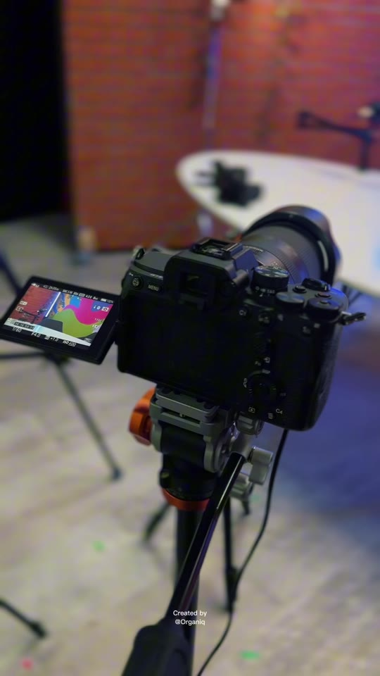

La tua voce.
Tutto il resto, con noi.
Uno spazio in cui registrare, un team che segue riprese e montaggio, una strategia per far vivere ogni episodio anche fuori dal podcast.
Dalla registrazione ai contenuti per YouTube, Spotify e social.
Un podcast, dall'idea alla distribuzione.
Puoi concentrarti sulla conversazione. Noi curiamo il set, la produzione e i contenuti che aiutano ogni episodio a raggiungere le persone giuste.
- 01 / SPAZIO
Location
Uno spazio per registrare il tuo podcast e dare una cornice riconoscibile al format.
- 02 / PRODUZIONE
Riprese
Registriamo l'episodio con un'impostazione video pensata per il tuo racconto.
- 03 / POST-PRODUZIONE
Montaggio
Mettiamo in ordine ritmo, immagini e audio per consegnare un episodio pronto.
- 04 / DISTRIBUZIONE
Pubblicazione
Prepariamo e pubblichiamo gli episodi sui canali concordati: YouTube e Spotify.
- 05 / DIREZIONE
Consulenza strategica
Definiamo format, temi, pubblico e obiettivi per dare una direzione al progetto.
- 06 / COPERTINA
Thumbnail
Creiamo la copertina degli episodi per renderli riconoscibili e invitare all'ascolto.
- 07 / CONTENUTI VERTICALI
Ogni episodio può vivere anche in verticale.
Selezioniamo i momenti migliori, li montiamo e li pubblichiamo come contenuti verticali per Shorts, Instagram, TikTok e Facebook.
Sul set con Scomodi Podcast.
Abbiamo prestato servizio a Scomodi Podcast. Nel video qui sopra puoi vedere un momento del lavoro sul set; sul loro profilo trovi il progetto e uno dei reel pubblicati.

Scomodi Podcast / Behind the scenesPorta la tua idea davanti ai microfoni.
Raccontaci il format che hai in mente. Definiremo insieme il servizio più adatto, la produzione e i canali di pubblicazione.
Raccontaci il tuo podcast ↗